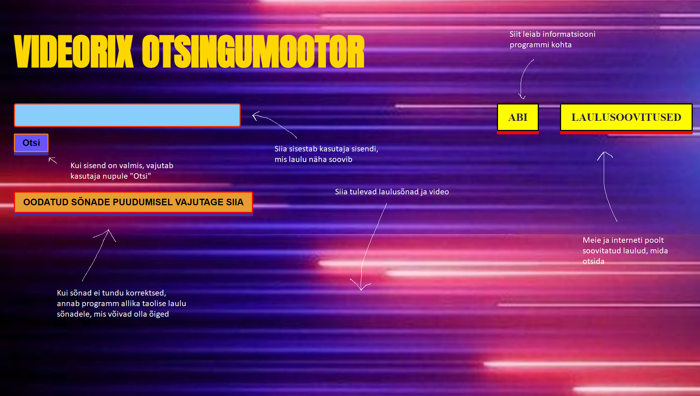

LISAINFO
Programm otsib sisestatud sisendiga Youtube'ist vastava laulu ning Google'ist laulu sõnad.
Kui sõnad ei tundu korrektsed, saab kasutaja allika teistele laulu sõnadele, mis samuti otsingule vastasid.
Et uut laulu ja sõnu saada, tuleb kasutajal uuesti lahter täita uue otsingusõna/otsingusõnadega.
Vasakul on pilt õpetusest.

Tagasi pealehe juurde saab siit